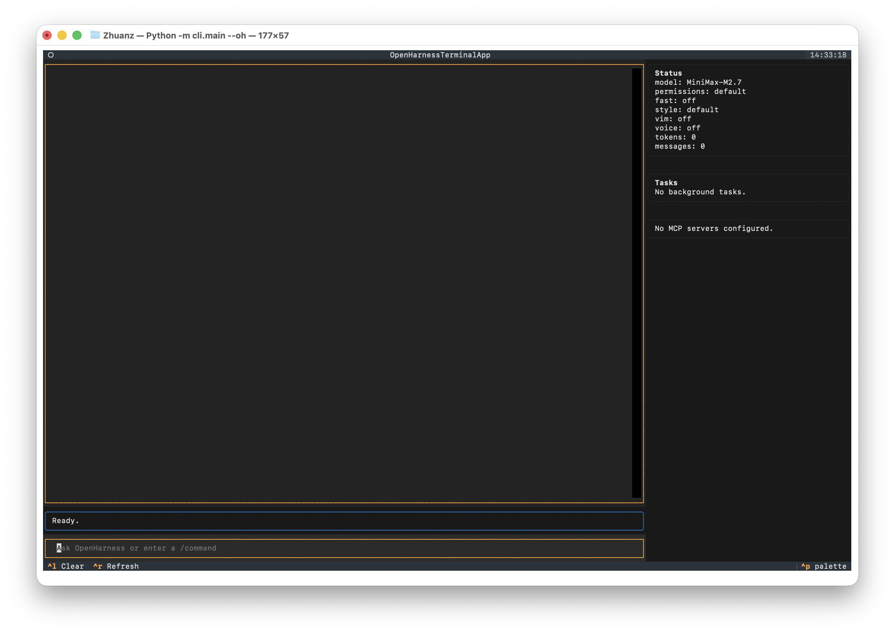
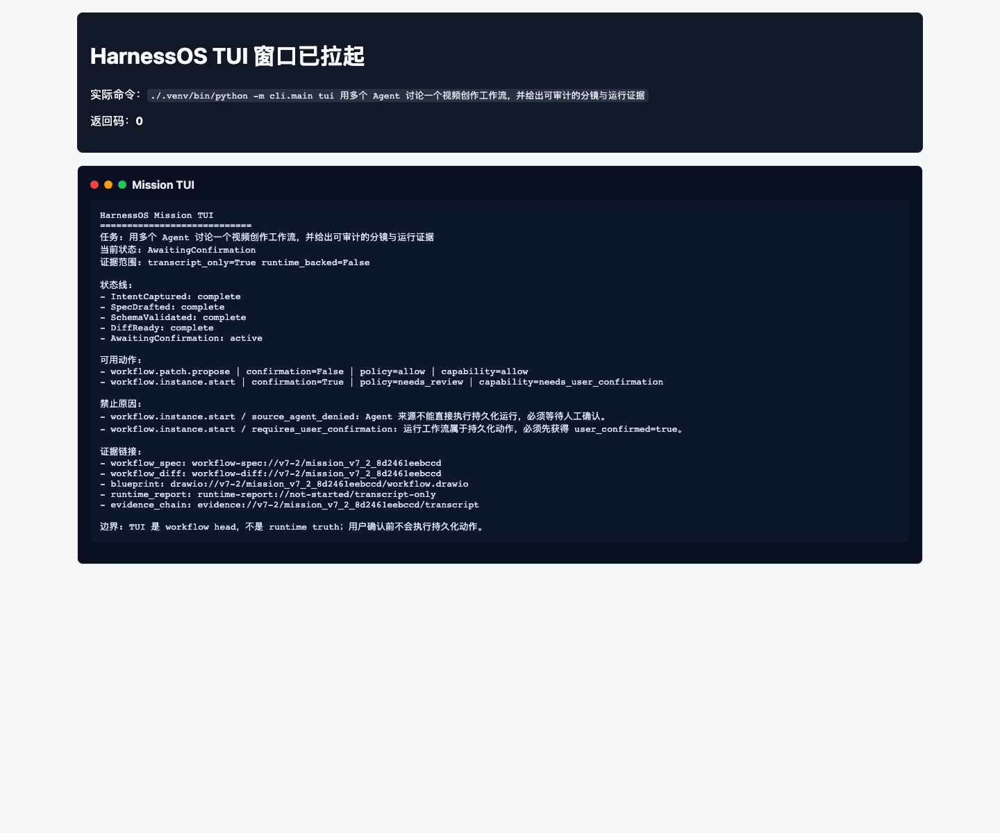
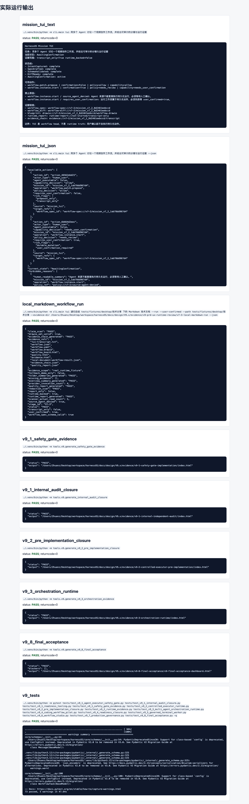
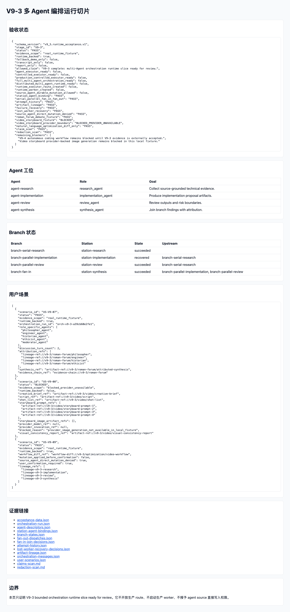
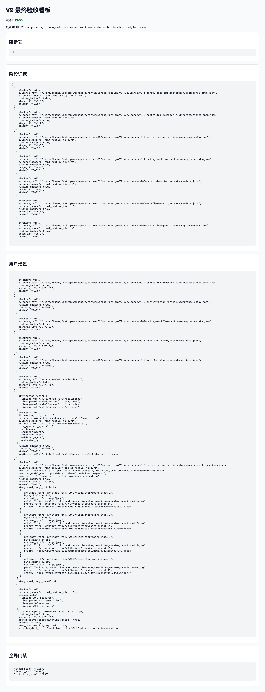

用户入口层
用户通过 Mission TUI / Workflow Studio / Product Console 输入自然语言目标、查看状态、确认 handoff。TUI 是 workflow head 和解释性界面，不直接构造 runtime truth。
证据：cli.main --oh 真实交互 TUI 截图、cli.main tui Mission TUI stdout、V9-6 Studio BFF/DTO 证据。
状态：PASS
允许声明：V9 complete: high-risk Agent execution and workflow productization baseline ready for review.
边界：该声明仍然不是 production ready、Agent executor ready、complete Workflow Studio ready 或 full multi-Agent orchestration ready。
用户通过 Mission TUI / Workflow Studio / Product Console 输入自然语言目标、查看状态、确认 handoff。TUI 是 workflow head 和解释性界面，不直接构造 runtime truth。
证据：cli.main --oh 真实交互 TUI 截图、cli.main tui Mission TUI stdout、V9-6 Studio BFF/DTO 证据。
每个 station 绑定独立 Agent 描述，包含 role / goal / memory / tools / skills / MCP refs。V9-3 证明 serial、parallel、fan-out、fan-in、recovery、attempt history 和 artifact lineage。
证据：v9-3-orchestration-runtime/acceptance-data.json 与运行看板。
V9-2 只允许四个受控动作：workflow.instance.start、station.rerun、artifact.write、quality.evaluation.create。所有 durable mutation 必须经过 policy、HumanAuthorizationRef / user confirmation、approval、kill switch、idempotency、rollback 和 evidence chain。
边界：source=agent direct durable mutation 继续拒绝。
V9-4/V9-5 提供代码工作流和受控终端 worker 试点：可以生成 plan、diff proposal、sandboxed test、review summary、transcript 和 diff capture。
边界：不自动 commit / push / deploy，不提供 unrestricted shell。
V9-7/V9-8 聚合 tenant isolation、credential lease、append-only audit export、incident timeline、No False Green、redaction 和最终验收看板。
证据：v9-final-acceptance-data.json status=PASS, blockers=[]。
| 用户可体验能力 | 实际运行设计 | 本页证据 | 边界 |
|---|---|---|---|
| 输入自然语言目标查看 Mission TUI | harness tui 渲染 intent、state timeline、available action、forbidden reason、evidence links | mission_tui_text.json / stdout；渲染快照单独标注为非真实窗口 | Mission TUI 是 transcript_only，不直接执行 durable mutation |
| 打开真实交互 TUI 并输入问题 | python -m cli.main --oh 拉起 OpenHarness Textual TUI，用户在 composer 输入问题，assistant 在 transcript 区响应 | 真实 macOS Terminal 窗口截图：启动态 + 输入后响应态 | 该截图只证明 TUI 界面和一次短交互，不证明 Agent executor ready |
| 运行本地 Markdown 技术文档总结工作流 | scanner 读取本地文件，provider-backed summary，生成 workflow board、quality report、evidence chain | v7-3-local-markdown-run/acceptance-data.json | 仅授权路径内文件；不存 raw prompt / raw file content |
| 多 Agent 讨论与合成结论 | station-bound Agents 执行 fan-out/fan-in、attempt history、lineage | V9-3 运行看板截图 | 不声明 full multi-Agent orchestration ready |
| 视频创作分镜工作流 | MiniMax provider 生成 4 张 storyboard images，记录 provider/model/invocation refs 和 sha256 | US-V9-08 分镜图与 storyboard-provider-evidence.json | 不存 provider request/response body、base64 或 credential |
| 最终验收与审计 | V9-8 validator 聚合阶段证据、用户场景、claim scan、redaction scan、drawio XML | V9-8 最终验收看板截图 | 最终声明只限 ready for review |
截图分为两类：真实窗口截图来自 macOS Terminal；渲染快照来自本报告 HTML 页面，只用于审查排版，不作为真实 TUI 窗口证据。

./.venv/bin/python -m cli.main --oh，显示 OpenHarnessTerminalApp、Status、Tasks、MCP 面板。




docs/design/V9.x/v9_target_prd.mddocs/design/V9.x/v9_target_architecture.mddocs/design/V9.x/v9_development_and_acceptance_plan.mddocs/design/V9.x/v9_acceptance_gate_matrix.mddocs/design/V9.x/v9_user_scenario_acceptance_gate.mdtests/test_v9_3_multi_agent_orchestration_runtime.pytests/test_v9_4_coding_workflow_pilot.pytests/test_v9_5_governed_terminal_worker.pytests/test_v9_6_workflow_studio.pytests/test_v9_7_production_governance.pytests/test_v9_8_final_acceptance.py本轮实际执行：./.venv/bin/python -m pytest tests/test_v9_1_agent_executor_safety_gate.py tests/test_v9_1_internal_audit_closure.py tests/test_v9_1_readiness_tooling.py tests/test_v9_1_safety_gate_evidence.py tests/test_v9_2_controlled_executor_runtime.py tests/test_v9_2_pre_implementation_closure.py tests/test_v9_2_runtime_evidence.py tests/test_v9_3_multi_agent_orchestration_runtime.py tests/test_v9_4_coding_workflow_pilot.py tests/test_v9_4_readiness_closure.py tests/test_v9_5_governed_terminal_worker.py tests/test_v9_6_workflow_studio.py tests/test_v9_7_production_governance.py tests/test_v9_8_final_acceptance.py -q
./.venv/bin/python -m cli.main tui 用多个 Agent 讨论一个视频创作工作流，并给出可审计的分镜与运行证据 - PASS./.venv/bin/python -m cli.main tui 用多个 Agent 讨论一个视频创作工作流，并给出可审计的分镜与运行证据 --json - PASS./.venv/bin/python -m cli.main tui 递归总结 tests/fixtures/desktop/技术分享 下的 Markdown 技术文档 --run --user-confirmed --path tests/fixtures/desktop/技术分享 --evidence-dir /Users/Zhuanz/Desktop/workspace/harnessOS/docs/design/V9.x/evidence/v9-prd-ux-runtime-review/v7-3-local-markdown-run --json - PASS./.venv/bin/python -m tools.v9.generate_safety_gate_evidence - PASS./.venv/bin/python -m tools.v9.generate_internal_audit_closure - PASS./.venv/bin/python -m tools.v9.generate_v9_2_pre_implementation_closure - PASS./.venv/bin/python -m tools.v9.generate_v9_3_orchestration_evidence - PASS./.venv/bin/python -m tools.v9.generate_v9_8_final_acceptance - PASS./.venv/bin/python -m pytest tests/test_v9_1_agent_executor_safety_gate.py tests/test_v9_1_internal_audit_closure.py tests/test_v9_1_readiness_tooling.py tests/test_v9_1_safety_gate_evidence.py tests/test_v9_2_controlled_executor_runtime.py tests/test_v9_2_pre_implementation_closure.py tests/test_v9_2_runtime_evidence.py tests/test_v9_3_multi_agent_orchestration_runtime.py tests/test_v9_4_coding_workflow_pilot.py tests/test_v9_4_readiness_closure.py tests/test_v9_5_governed_terminal_worker.py tests/test_v9_6_workflow_studio.py tests/test_v9_7_production_governance.py tests/test_v9_8_final_acceptance.py -q - PASS| 检查项 | 状态 | 说明 |
|---|---|---|
| tui_command_runs | PASS | TUI command rendered text state. |
| tui_json_state_runs | PASS | TUI command rendered JSON state. |
| real_openharness_tui_screenshot_exists | PASS | Real macOS Terminal window screenshot for `python -m cli.main --oh` exists. |
| real_openharness_tui_after_input_screenshot_exists | PASS | Real OpenHarness Textual TUI screenshot after user input and assistant response exists. |
| local_markdown_workflow_runs | PASS | Natural-language local Markdown workflow executed with user confirmation. |
| v9_1_safety_gate_evidence_runs | PASS | V9-1 safety gate evidence was regenerated before final acceptance. |
| v9_1_internal_audit_runs | PASS | V9-1 internal audit closure was regenerated before final acceptance. |
| v9_2_pre_implementation_closure_runs | PASS | V9-2 pre-implementation closure was regenerated before final acceptance. |
| v9_3_runtime_runs | PASS | V9-3 orchestration runtime evidence regenerated. |
| v9_8_final_acceptance_runs | PASS | V9-8 final acceptance validator regenerated. |
| v9_tests_pass | PASS | V9 pytest suite passed. |
| v9_final_pass | PASS | V9 final acceptance status is PASS. |
| v9_final_has_no_blockers | PASS | V9 final acceptance blockers are empty. |
| claim_scan_pass | PASS | No False Green scan is PASS. |
| redaction_scan_pass | PASS | Redaction scan is PASS. |
| storyboard_provider_backed | PASS | US-V9-08 provider-backed storyboard evidence is PASS. |
| storyboard_has_four_images | PASS | At least four storyboard image artifacts exist. |
| local_run_runtime_backed | PASS | Local Markdown workflow evidence is runtime-backed. |
TUI goal: 用多个 Agent 讨论一个视频创作工作流，并给出可审计的分镜与运行证据
本地 Markdown 工作流 goal: 递归总结 tests/fixtures/desktop/技术分享 下的 Markdown 技术文档
{
"claim_scan": "PASS",
"drawio_xml_valid": true,
"evidence_chain_generated": "PASS",
"evidence_refs": [
"tui-transcript.txt",
"workflow.json",
"workflow.yaml",
"workflow.drawio",
"workflow_board.html",
"quality.html",
"evidence.html",
"local-document-workflow-result.json",
"evidence_chain.json",
"quality_report.json"
],
"evidence_scope": "real_runtime_fixture",
"fallback_demo_only": false,
"folder_summaries_generated": "PASS",
"missing_evidence": [],
"overview_summary_generated": "PASS",
"provider_invocation_count": 4,
"quality_report_generated": "PASS",
"redaction_scan": "PASS",
"report_only": false,
"runtime_backed": true,
"runtime_report_generated": "PASS",
"scanner_actual_read_count": 5,
"source_agent_denied": true,
"stage_id": "V7-3",
"status": "PASS",
"transcript_only": false,
"user_confirmed": true,
"workflow_spec_schema_valid": true
}
| 场景 | 状态 | runtime_backed | 证据 |
|---|---|---|---|
| US-V9-01 | PASS | True | /Users/Zhuanz/Desktop/workspace/harnessOS/docs/design/V9.x/evidence/v9-2-controlled-executor-runtime/acceptance-data.json |
| US-V9-02 | PASS | True | /Users/Zhuanz/Desktop/workspace/harnessOS/docs/design/V9.x/evidence/v9-3-orchestration-runtime/acceptance-data.json |
| US-V9-03 | PASS | True | /Users/Zhuanz/Desktop/workspace/harnessOS/docs/design/V9.x/evidence/v9-4-coding-workflow-runtime/acceptance-data.json |
| US-V9-04 | PASS | True | /Users/Zhuanz/Desktop/workspace/harnessOS/docs/design/V9.x/evidence/v9-5-terminal-worker/acceptance-data.json |
| US-V9-05 | PASS | True | /Users/Zhuanz/Desktop/workspace/harnessOS/docs/design/V9.x/evidence/v9-6-workflow-studio/acceptance-data.json |
| US-V9-06 | PASS | False | self://v9-8-final-dashboard |
| US-V9-07 | PASS | True | real_runtime_fixture |
| US-V9-08 | PASS | True | real_provider_backed_runtime_fixture |
| US-V9-09 | PASS | True | real_runtime_fixture |
provider: provider-ref://minimax/image-generation; model: provider-model-ref://minimax/image-01; invocation: provider-invocation-ref://v9-3/video/provider-invocation-v9-3-3d016841d1fd
{
"base64_stored": false,
"created_at": "2026-06-08T02:59:00Z",
"credential_material_stored": false,
"evidence_scope": "real_provider_backed_runtime_fixture",
"prompt_material_stored": false,
"prompt_refs": [
"artifact-ref://v9-3/video/storyboard-prompt-1",
"artifact-ref://v9-3/video/storyboard-prompt-2",
"artifact-ref://v9-3/video/storyboard-prompt-3",
"artifact-ref://v9-3/video/storyboard-prompt-4"
],
"provider_config_source": "dotenv://minimax-image-provider",
"provider_invocation_ref": "provider-invocation-ref://v9-3/video/provider-invocation-v9-3-3d016841d1fd",
"provider_model_ref": "provider-model-ref://minimax/image-01",
"provider_ref": "provider-ref://minimax/image-generation",
"provider_request_body_stored": false,
"provider_response_body_stored": false,
"runtime_backed": true,
"scenario_id": "US-V9-08",
"schema_version": "v9_3.provider_storyboard_evidence.v1",
"status": "PASS",
"storyboard_image_artifacts": [
{
"artifact_ref": "artifact-ref://v9-3/video/storyboard-image-1",
"byte_size": 464332,
"content_type": "image/jpeg",
"path": "evidence/v9-3-orchestration-runtime/storyboard-images/storyboard-shot-1.jpg",
"prompt_ref": "artifact-ref://v9-3/video/storyboard-prompt-1",
"sha256": "8eb0406c8ddcb975048bbb9928a90c881e15fc7e5c05c5d0a0fb35333cf6fe9d"
},
{
"artifact_ref": "artifact-ref://v9-3/video/storyboard-image-2",
"byte_size": 419327,
"content_type": "image/jpeg",
"path": "evidence/v9-3-orchestration-runtime/storyboard-images/storyboard-shot-2.jpg",
"prompt_ref": "artifact-ref://v9-3/video/storyboard-prompt-2",
"sha256": "ac5fe6bb79f4857fd5da7f0a209d5a3cb3e18ef34a5aa0decb070933a18845e0"
},
{
"artifact_ref": "artifact-ref://v9-3/video/storyboard-image-3",
"byte_size": 247153,
"content_type": "image/jpeg",
"path": "evidence/v9-3-orchestration-runtime/storyboard-images/storyboard-shot-3.jpg",
"prompt_ref": "artifact-ref://v9-3/video/storyboard-prompt-3",
"sha256": "5ba097b207c7a5c7b1eabed5650064898fbc19dce27a742a002489f9f97a60cd"
},
{
"artifact_ref": "artifact-ref://v9-3/video/storyboard-image-4",
"byte_size": 305190,
"content_type": "image/jpeg",
"path": "evidence/v9-3-orchestration-runtime/storyboard-images/storyboard-shot-4.jpg",
"prompt_ref": "artifact-ref://v9-3/video/storyboard-prompt-4",
"sha256": "1cd37afc0b3eafb8aac300253a03948ef2c38ef018eb58af1562343928fade9f"
}
]
}
{
"agent_executor_ready": false,
"autonomous_coding_workflow_ready": false,
"blockers": [],
"claim_scan": "PASS",
"complete_workflow_studio_ready": false,
"controlled_executor_ready": false,
"created_at": "2026-06-08T06:40:08Z",
"drawio_xml": "PASS",
"final_claim": "V9 complete: high-risk Agent execution and workflow productization baseline ready for review.",
"full_multi_agent_orchestration_ready": false,
"full_production_ga": false,
"high_risk_decisions": [
{
"blocker": null,
"decision_ref": "v9-1-limited-safety-gate-implementation-approved",
"evidence_ref": "/Users/Zhuanz/Desktop/workspace/harnessOS/docs/design/V9.x/decisions/v9_1_high_risk_human_decision.json",
"stage_id": "V9-1",
"status": "PASS"
},
{
"blocker": null,
"decision_ref": "v9-2-limited-controlled-runtime-implementation-approved",
"evidence_ref": "/Users/Zhuanz/Desktop/workspace/harnessOS/docs/design/V9.x/decisions/v9_2_high_risk_human_decision.json",
"stage_id": "V9-2",
"status": "PASS"
},
{
"blocker": null,
"decision_ref": "v9-4-autonomous-coding-workflow-pilot-approved",
"evidence_ref": "/Users/Zhuanz/Desktop/workspace/harnessOS/docs/design/V9.x/decisions/v9_4_high_risk_human_decision.json",
"stage_id": "V9-4",
"status": "PASS"
},
{
"blocker": null,
"decision_ref": "v9-5-governed-terminal-worker-expansion-approved",
"evidence_ref": "/Users/Zhuanz/Desktop/workspace/harnessOS/docs/design/V9.x/decisions/v9_5_high_risk_human_decision.json",
"stage_id": "V9-5",
"status": "PASS"
},
{
"blocker": null,
"decision_ref": "v9-7-production-governance-high-risk-approved",
"evidence_ref": "/Users/Zhuanz/Desktop/workspace/harnessOS/docs/design/V9.x/decisions/v9_7_high_risk_human_decision.json",
"stage_id": "V9-7",
"status": "PASS"
}
],
"planning_docs_counted_as_runtime_evidence": false,
"production_browser_automation_ready": false,
"production_controlled_executor_ready": false,
"production_ready": false,
"production_terminal_automation_ready": false,
"redaction_scan": "PASS",
"schema_version": "v9_8.final_acceptance.v1",
"stage_id": "V9-8",
"stage_results": [
{
"blocker": null,
"evidence_ref": "/Users/Zhuanz/Desktop/workspace/harnessOS/docs/design/V9.x/evidence/v9-1-safety-gate-implementation/acceptance-data.json",
"evidence_scope": "real_code_policy_validation",
"runtime_backed": false,
"stage_id": "V9-1",
"status": "PASS"
},
{
"blocker": null,
"evidence_ref": "/Users/Zhuanz/Desktop/workspace/harnessOS/docs/design/V9.x/evidence/v9-2-controlled-executor-runtime/acceptance-data.json",
"evidence_scope": "real_runtime_fixture",
"runtime_backed": true,
"stage_id": "V9-2",
"status": "PASS"
},
{
"blocker": null,
"evidence_ref": "/Users/Zhuanz/Desktop/workspace/harnessOS/docs/design/V9.x/evidence/v9-3-orchestration-runtime/acceptance-data.json",
"evidence_scope": "real_runtime_fixture",
"runtime_backed": true,
"stage_id": "V9-3",
"status": "PASS"
},
{
"blocker": null,
"evidence_ref": "/Users/Zhuanz/Desktop/workspace/harnessOS/docs/design/V9.x/evidence/v9-4-coding-workflow-runtime/acceptance-data.json",
"evidence_scope": "real_runtime_fixture",
"runtime_backed": true,
"stage_id": "V9-4",
"status": "PASS"
},
{
"blocker": null,
"evidence_ref": "/Users/Zhuanz/Desktop/workspace/harnessOS/docs/design/V9.x/evidence/v9-5-terminal-worker/acceptance-data.json",
"evidence_scope": "real_runtime_fixture",
"runtime_backed": true,
"stage_id": "V9-5",
"status": "PASS"
},
{
"blocker": null,
"evidence_ref": "/Users/Zhuanz/Desktop/workspace/harnessOS/docs/design/V9.x/evidence/v9-6-workflow-studio/acceptance-data.json",
"evidence_scope": "real_runtime_fixture",
"runtime_backed": true,
"stage_id": "V9-6",
"status": "PASS"
},
{
"blocker": null,
"evidence_ref": "/Users/Zhuanz/Desktop/workspace/harnessOS/docs/design/V9.x/evidence/v9-7-production-governance/acceptance-data.json",
"evidence_scope": "real_runtime_fixture",
"runtime_backed": true,
"stage_id": "V9-7",
"status": "PASS"
}
],
"status": "PASS",
"unrestricted_terminal_worker_ready": false,
"user_scenarios": [
{
"blocker": null,
"evidence_ref": "/Users/Zhuanz/Desktop/workspace/harnessOS/docs/design/V9.x/evidence/v9-2-controlled-executor-runtime/acceptance-data.json",
"runtime_backed": true,
"scenario_id": "US-V9-01",
"status": "PASS"
},
{
"blocker": null,
"evidence_ref": "/Users/Zhuanz/Desktop/workspace/harnessOS/docs/design/V9.x/evidence/v9-3-orchestration-runtime/acceptance-data.json",
"runtime_backed": true,
"scenario_id": "US-V9-02",
"status": "PASS"
},
{
"blocker": null,
"evidence_ref": "/Users/Zhuanz/Desktop/workspace/harnessOS/docs/design/V9.x/evidence/v9-4-coding-workflow-runtime/acceptance-data.json",
"runtime_backed": true,
"scenario_id": "US-V9-03",
"status": "PASS"
},
{
"blocker": null,
"evidence_ref": "/Users/Zhuanz/Desktop/workspace/harnessOS/docs/design/V9.x/evidence/v9-5-terminal-worker/acceptance-data.json",
"runtime_backed": true,
"scenario_id": "US-V9-04",
"status": "PASS"
},
{
"blocker": null,
"evidence_ref": "/Users/Zhuanz/Desktop/workspace/harnessOS/docs/design/V9.x/evidence/v9-6-workflow-studio/acceptance-data.json",
"runtime_backed": true,
"scenario_id": "US-V9-05",
"status": "PASS"
},
{
"blocker": null,
"evidence_ref": "self://v9-8-final-dashboard",
"runtime_backed": false,
"scenario_id": "US-V9-06",
"status": "PASS"
},
{
"attribution_refs": [
"lineage-ref://v9-3/roman-forum/philosopher",
"lineage-ref://v9-3/roman-forum/engineer",
"lineage-ref://v9-3/roman-forum/historian",
"lineage-ref://v9-3/roman-forum/ethicist"
],
"blocker": null,
"discussion_turn_count": 2,
"evidence_chain_ref": "evidence-chain://v9-3/roman-forum",
"evidence_scope": "real_runtime_fixture",
"orchestration_run_id": "orch-v9-3-22df4a6823bd",
"role_specific_agents": [
"philosopher_agent",
"engineer_agent",
"historian_agent",
"ethicist_agent",
"moderator_agent"
],
"runtime_backed": true,
"scenario_id": "US-V9-07",
"status": "PASS",
"synthesis_ref": "artifact-ref://v9-3/roman-forum/attributed-synthesis"
},
{
"blocker": null,
"evidence_ref": "/Users/Zhuanz/Desktop/workspace/harnessOS/docs/design/V9.x/evidence/v9-3-orchestration-runtime/storyboard-provider-evidence.json",
"evidence_scope": "real_provider_backed_runtime_fixture",
"provider_invocation_ref": "provider-invocation-ref://v9-3/video/provider-invocation-v9-3-3d016841d1fd",
"provider_model_ref": "provider-model-ref://minimax/image-01",
"provider_ref": "provider-ref://minimax/image-generation",
"runtime_backed": true,
"scenario_id": "US-V9-08",
"status": "PASS",
"storyboard_image_artifacts": [
{
"artifact_ref": "artifact-ref://v9-3/video/storyboard-image-1",
"byte_size": 464332,
"content_type": "image/jpeg",
"path": "evidence/v9-3-orchestration-runtime/storyboard-images/storyboard-shot-1.jpg",
"prompt_ref": "artifact-ref://v9-3/video/storyboard-prompt-1",
"sha256": "8eb0406c8ddcb975048bbb9928a90c881e15fc7e5c05c5d0a0fb35333cf6fe9d"
},
{
"artifact_ref": "artifact-ref://v9-3/video/storyboard-image-2",
"byte_size": 419327,
"content_type": "image/jpeg",
"path": "evidence/v9-3-orchestration-runtime/storyboard-images/storyboard-shot-2.jpg",
"prompt_ref": "artifact-ref://v9-3/video/storyboard-prompt-2",
"sha256": "ac5fe6bb79f4857fd5da7f0a209d5a3cb3e18ef34a5aa0decb070933a18845e0"
},
{
"artifact_ref": "artifact-ref://v9-3/video/storyboard-image-3",
"byte_size": 247153,
"content_type": "image/jpeg",
"path": "evidence/v9-3-orchestration-runtime/storyboard-images/storyboard-shot-3.jpg",
"prompt_ref": "artifact-ref://v9-3/video/storyboard-prompt-3",
"sha256": "5ba097b207c7a5c7b1eabed5650064898fbc19dce27a742a002489f9f97a60cd"
},
{
"artifact_ref": "artifact-ref://v9-3/video/storyboard-image-4",
"byte_size": 305190,
"content_type": "image/jpeg",
"path": "evidence/v9-3-orchestration-runtime/storyboard-images/storyboard-shot-4.jpg",
"prompt_ref": "artifact-ref://